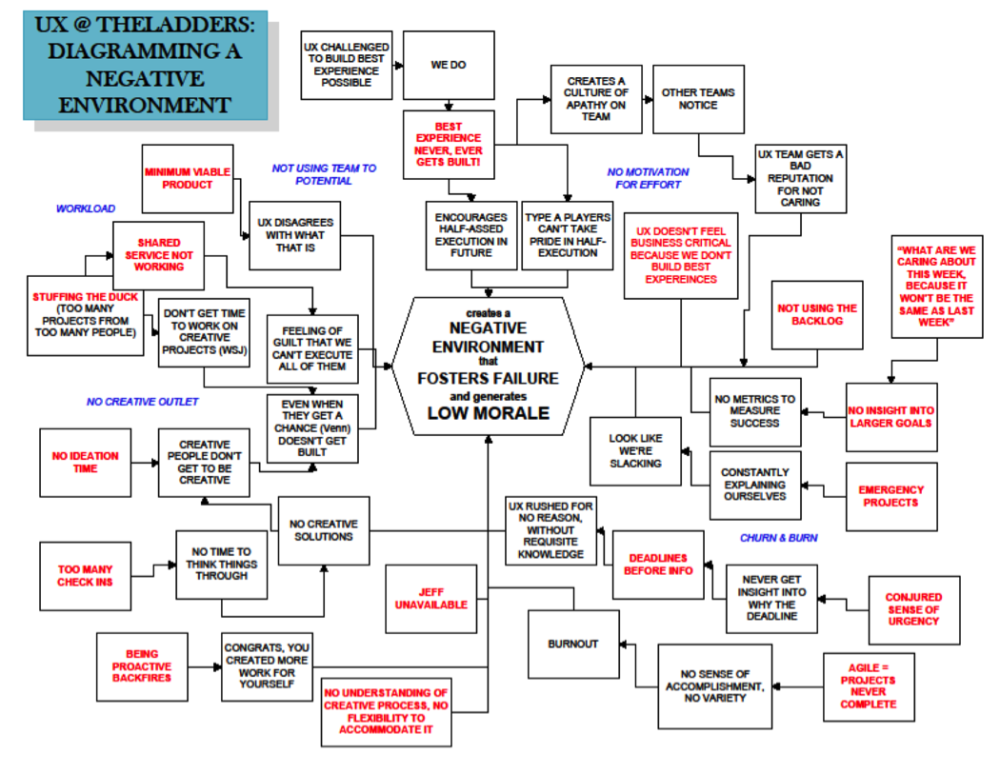

Integrating design into Agile development is never easy. Sometimes, it causes a lot of pain and heartache. Jeff learned that first-hand when he was at TheLadders. After spending some time trying to integrate UX work with an Agile process, Jeff was feeling pretty good—until one morning when his UX team delivered the diagram shown in Figure III-1. This diagram visualized all of the challenges the team was facing as they tried to integrate its practice into the Agile environment. It served, initially, as a large slice of humble pie. Ultimately, though, it provided the beginning of conversations that helped Jeff, his UX team, and the rest of TheLadders’ product development staff build an integrated, collaborative practice.

In the years since this diagram was created, we’ve been fortunate to work at a consulting firm that we helped found. At Neo, the work we did with companies spanned a broad range of industries, company sizes, and cultures. We helped media organizations figure out new ways to deliver and monetize their content. We built new, mobile-first sales tools for a commercial furniture manufacturer. We consulted with fashion retailers, automotive services companies, and large banks to help them build Lean UX practices. We worked with nonprofits to create new service offerings. And we trained countless teams.
Each of these projects provided us a bit more insight into how Lean UX works in that environment. We used that insight to make each subsequent project that much more successful. We’ve built up a body of knowledge over the past five years that has given us a clear sense of what needs to happen—at the team and at the organization level—for Lean UX to succeed. This is the focus of Part III.
Chapter 7 discusses how Lean UX fits into an Agile environment.
Chapter 8 digs into the specific organizational changes that you need to make to support this way of working. It’s not just software developers and designers who need to find a way to work together: your entire product development engine is going to need to change if you want to create a truly Agile organization.
Chapter 9 presents a set of case studies that showcase how these tactics and organizational shifts have succeeded at a variety of companies.